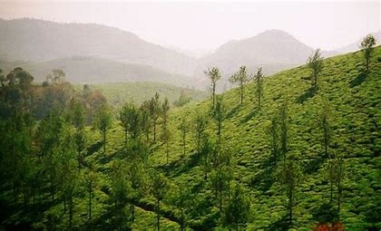
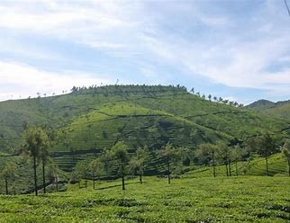

The Cardamom Hills or Yela Mala are mountain range of southern India and part of the southern Western Ghats located in Idukki district, Kerala, India. Their name comes from the cardamom spice grown in much of the hills' cool elevation, which also supports pepper and coffee. The Western Ghats and Periyar Sub-Cluster including the Cardamom Hills are UNESCO World Heritage Sites. The Cardamom Hills central point is about 9°52′N 77°09′E. They cover about 2,800 km2 of mountainous terrain with deep valleys, and includes the drainages of the west flowing Periyar, Mullayar and Pamba rivers. It includes Idukki Dam and Mullaperiyar Dam. They conjoin the Anaimalai Hills to the northwest, the Palani Hills to the northeast and the Pothigai to the south as far as the Aryankavu pass (at c. 9° N). The crest of the hills form the boundary between Kerala and Tamil Nadu. Anamudi (8,842 ft (2695 m)) in Eravikulam National Park, is the highest peak in Western ghats and also the highest point in India south of the Himalayas.
Cardamom Hills

| Cardamom Hills | |
|---|---|
|  | |
| Highest Point | |
| Elevation | 2,695 m (8,842 ft) |
| Length | 2,800 km E-S |
| Coordinates | 9°52′0″N 77°09′0″E |
| Geography | |
| Location | Kerala |
| Borders on | Tamil Nadu, Kerala |